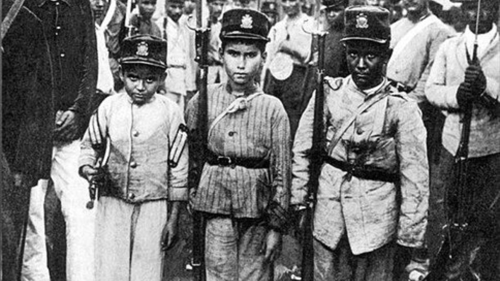
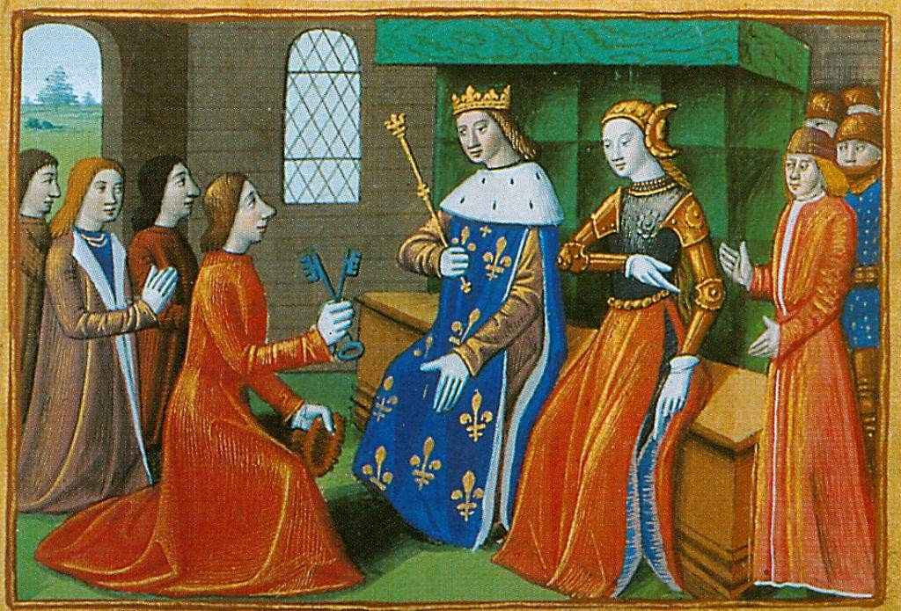
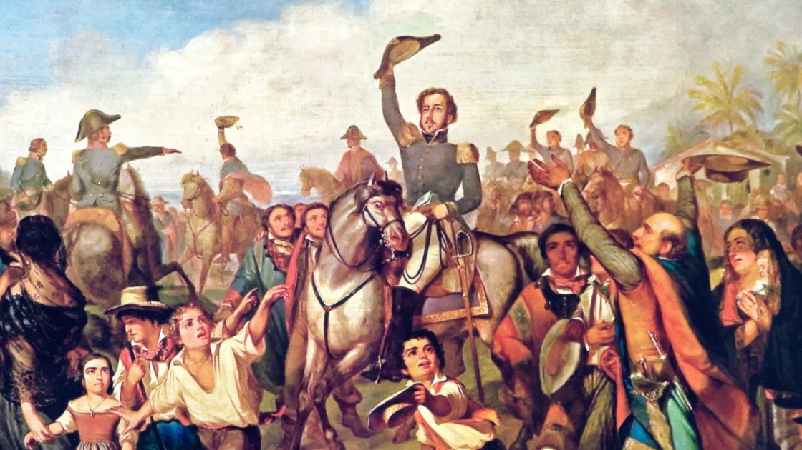
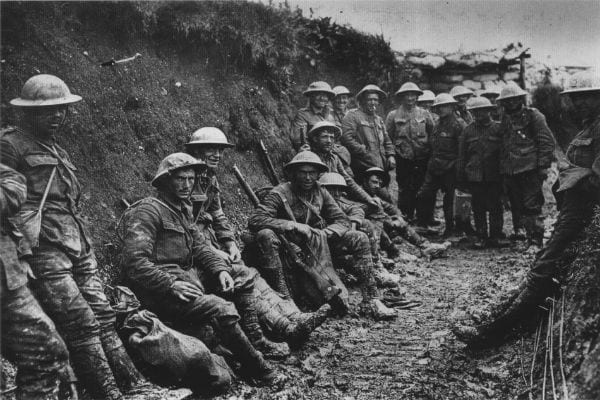

História
Conteúdo: Guerra do Paraguai
Texto explicativo
A Guerra do Paraguai (1864–1870) foi o maior conflito armado da América do Sul e opôs o Paraguai à Tríplice Aliança, formada por Brasil, Argentina e Uruguai. O conflito começou por disputas territoriais e de livre navegação na Bacia do Prata, além das ambições expansionistas do líder paraguaio Francisco Solano López. O estopim ocorreu quando o Paraguai aprisionou um navio brasileiro e invadiu o Mato Grosso e a Argentina. A guerra terminou em março de 1870 com a vitória dos aliados e a morte de Solano López na Batalha de Cerro Corá. Como consequência, o Paraguai sofreu devastação econômica, perda de territórios e a morte da maior parte de sua população, enquanto o Brasil se endividou e fortaleceu o Exército.
Imagem explicativa

Vídeo explicativo
Assista a uma aula sobre a guerra do Paraguai
Conteúdo: Idade Média
Texto explicativo
A Idade Média foi um período da história que começou com a queda do Império Romano do Ocidente, em 476, e terminou tradicionalmente em 1453. Nesse período, a sociedade europeia era marcada pelo feudalismo, pelos castelos e pela forte influência da Igreja Católica.
Imagem explicativa

Vídeo explicativo
Assista a uma aula sobre a Idade Média:
Conteúdo: Revolução Francesa
Texto explicativo
A Revolução Francesa foi um movimento político e social iniciado em 1789, na França. A população estava insatisfeita com as desigualdades sociais, os altos impostos e os privilégios da nobreza e do clero. A revolução defendia ideias de liberdade, igualdade e fraternidade. Um dos acontecimentos mais conhecidos foi a queda da Bastilha, em 14 de julho de 1789. Esse movimento transformou a sociedade francesa e influenciou diversos países.
Imagem explicativa
Vídeo explicativo
Assista a uma aula sobre a Revolução Francesa:
Conteúdo: Independência do Brasil
Texto explicativo
A Independência do Brasil aconteceu em 7 de setembro de 1822, quando Dom Pedro proclamou a separação do Brasil de Portugal. Antes disso, o território brasileiro era uma colônia portuguesa. O processo de independência foi resultado de diversos conflitos políticos e interesses econômicos. Após a independência, Dom Pedro tornou-se o primeiro imperador do Brasil. A data é lembrada como um dos acontecimentos mais importantes da história brasileira.
Imagem explicativa

Vídeo explicativo
Assista a uma aula sobre a Independência do Brasil:
Conteúdo: Primeira Guerra Mundial
Texto explicativo
A Primeira Guerra Mundial aconteceu entre 1914 e 1918, envolvendo diversas potências mundiais. Entre suas causas estavam as disputas territoriais, o nacionalismo, o imperialismo e as alianças militares. O conflito ficou conhecido pelo uso de trincheiras e pelas grandes perdas humanas. A guerra terminou com a vitória dos Aliados e provocou profundas mudanças políticas, econômicas e territoriais no mundo.
Imagem explicativa

Vídeo explicativo
Assista a uma aula sobre a Primeira Guerra Mundial: